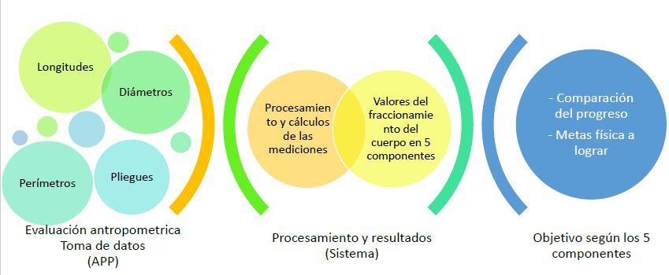
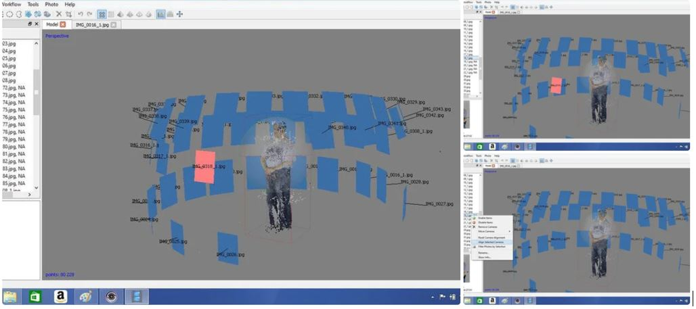
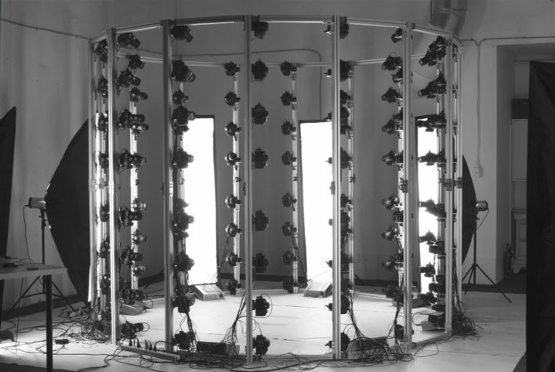
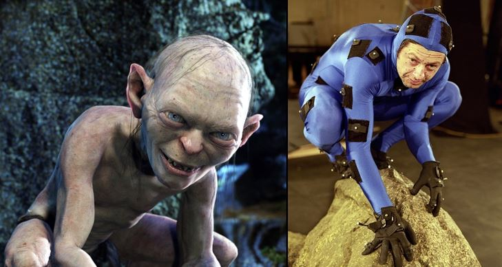
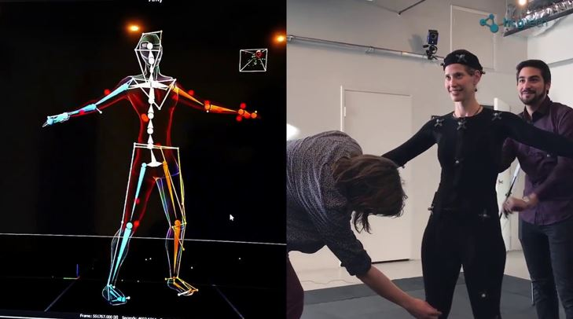
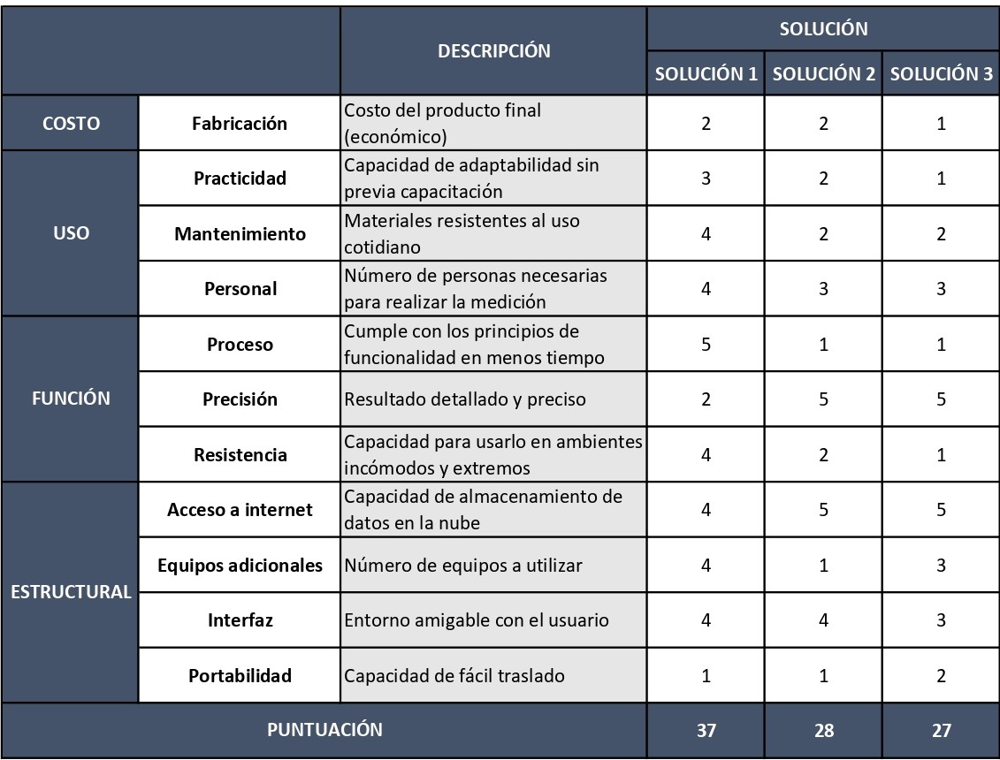

1. CONCEPTOS DE SOLUCIÓN
1.1. CONCEPTO NÚMERO 1: TOMA DE PARÁMETROS ANTROPOMÉTRICOS MEDIANTE FOTOGRAFÍAS
Esta solución consiste en la creación de un app para el registro de datos antropométricos y el posterior procesamiento de esta información.
En primer lugar esta app proporcionará un sistema de registro de los datos antropométricos de una forma rápida y portable. Logrando así tomar y enviar la información a un pequeño sistema para que esta pueda ser utilizada posteriormente. Para acceder a esta app se necesitará de un registro previo, ya que únicamente estos datos recopilados deben de ser ingresados por un profesional calificado. También el IPD cuenta con dispositivos electrónicos como tablets, completamente nuevas, que serán usadas para lograr el funcionamiento de esta nueva app interactiva de recaudación de información.
Por otro lado, después del recopilado de datos el sistema creado realizará los cálculos necesarios para obtener los valores del fraccionamiento del cuerpo en 5 componentes, la masa grasa, masa muscular, masa residual, masa ósea y piel, que serán resultados de las mediciones antropométricas. Todo esto ayudará que se genere un nuevo objetivo para el atleta, ya que en su siguiente medición antropométrica debe de mejorar sus valores de fraccionamiento del cuerpo según su medio y nutricionista lo requiera. Dentro del sistema que se usará se logrará poseer los datos de las diversas mediciones hechas al atleta, para así examinar su avance durante los periodos de entrenamiento y lograr tener una mayor referencia para que los atletas tengan conocimiento del resultado que deben de alcanzar para ser aún más competitivo.

Figura 1. Diagrama de flujo de la aplicación.
1.2. CONCEPTO NÚMERO 2: USO DE FOTOGRAMETRÍA PARA DISEÑO EN 3D DEL ATLETA
Según el libro “Introduction to Photogrammetry” por T. Schenk, se dice que no hay una definición universal aceptada de fotogrametría, pero la noción más importante de esta es que es la ciencia de obtener información sobre las propiedades de superficies y objetos sin contacto físico con estos, de esta manera medir e interpretar esta información. La forma de esta información puede ser desde fotografías hasta patrones de energía electromagnética radiante de los objetos.
La manera más sencilla de aplicar la fotogrametría sería la obtención de un diseño tridimensional basándose en la toma de fotos al objeto a diseñar en distintas posiciones. Es decir, obtendremos información tridimensional de información bidimensional.

Figura 2. Ejemplo de obtención de imagen tridimensional con recolección de fotografías en distintos ángulos.(PhotoScan. 2019, de Instructables workshop)
Entonces, basándonos en esta técnica, se podría obtener la información antropométrica del atleta.
La obtención de las imágenes se podría conseguir con la toma de fotografías simultáneamente desde distintos puntos (Es importante evitar sombras y usar suficiente luz para que el sistema pueda reconocer entre el atleta y el fondo), softwares tales como Open SmartShooter son usados con este propósito además de poder realizar ajustes a las cámaras de manera simultánea.

Figura 3. Ejemplo de montaje y posicionamiento de las cámaras fotográficas. (144X DSLR. 2019, de Pixel Light Effects)
Una vez se hayan obtenido las imágenes, con uso de softwares se podrán importar y alinear estas de manera que se podrá obtener una primera vista del atleta en 3D.
Finalmente, mediante programas limpiar la “basura” existente en el modelo, que son principalmente partes del fondo (En la figura 1 se pueden observar como una nube blanca alrededor de la persona), una vez concluido este proceso, podremos obtener la imagen tridimensional la cual podremos usar para realizar las medidas necesarias en el mismo computador.
1.3. CONCEPTO NÚMERO 3: MEDICIÓN ANTROPOMÉTRICA BASADA EN CAPTURA DE MOVIMIENTO
Si bien este arte se popularizó gracias a grandes producciones para la pantalla grande, la captura de movimiento es una técnica que en los últimos años se ha estado aprovechando en múltiples disciplinas que van desde videojuegos hasta ciencias de la salud, tal y como se detallará a continuación.

Figura 4. Ejemplo de captura de movimiento para recrear al Gollum. ( 2019, de Terceto comunicación)
Esta solución utiliza la tecnología de captura de movimiento para registrar las acciones de atletas a través de trajes especiales y varios marcadores colocados en partes estratégicas del rostro y el cuerpo. Posteriormente, se genera un modelo tridimensional exacto de cada atleta, con el cual con la ayuda de un software especializado se logra tomar las mediciones antropométricas.

Figura 5. Sistema de medición de movimiento. (2019, de Gamedustria)
Las ventajas de esta técnica, es primero, brindar una rápida medición antropométrica, ya que solo basta con colocarse el traje para tomar las medidas y segundo, el bajo margen de error que tiene, puesto que el modelo tridimensional generado es una copia exacta del atleta. Sin embargo, dentro de las desventajas están, el alto costo que conlleva invertir en los equipos y el software, y el tiempo inicial que toma montar todo el estudio de grabación.
2. CONCEPTO ESCOGIDO
La solución que escogimos es la número 1 ya que cumple con la mayoría de los requerimientos de diseño
Tabla 3
Evaluación de las soluciones.
Evaluación del 1 al 5.

3. DIAGNÓSTICO
El Instituto Peruano de Deporte posee pocos profesionales de salud con una certificación internacional en kinantropometría que lo acredita como antropometrista calificado a nivel internacional. Esta certificación es otorgada por ISAK que tiene como finalidad promover la utilización del método antropométrico para el estudio de la forma humana y composición corporal en deportistas y público general. El IPD posee personal experimentado ISAK de nivel 3, los cuales evalúan a los deportistas con un kit antropométrico que contiene cinta antropométrica, antropómetro, calibre antropométrico, plicómetro, etc. Estos datos son recolectados mediante hoja y papel; sin embargo tiene sus desventajas debido a que con este método anterior hay una pérdida de tiempo tanto para el proceso de anotación de datos en la hoja de papel como para transferir los datos a la computadora y generar gráficos estadísticos de los avances de cada deportista.